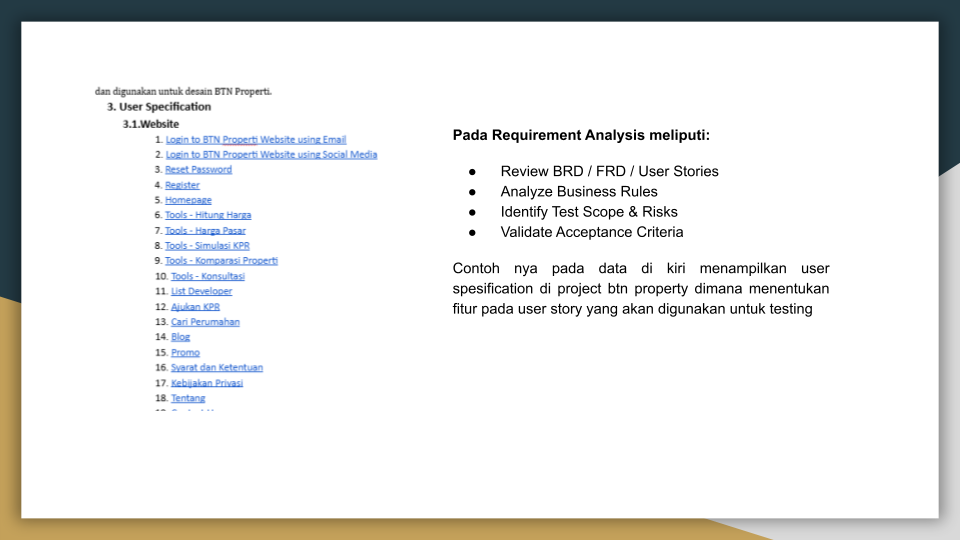
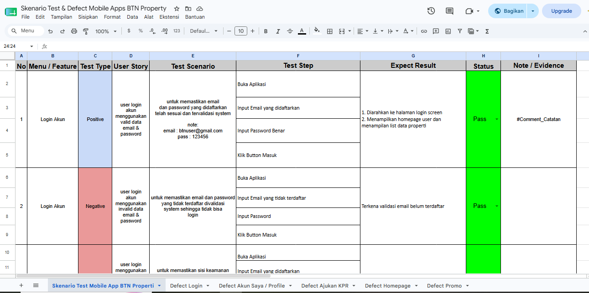
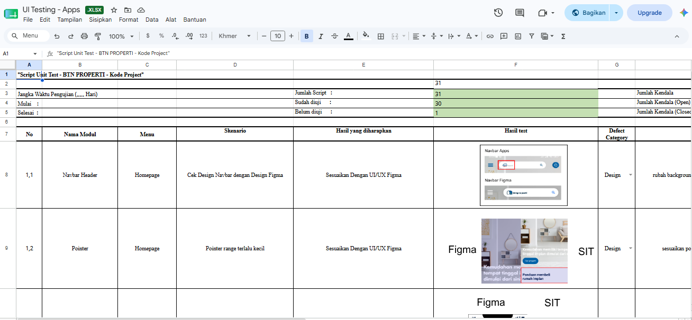
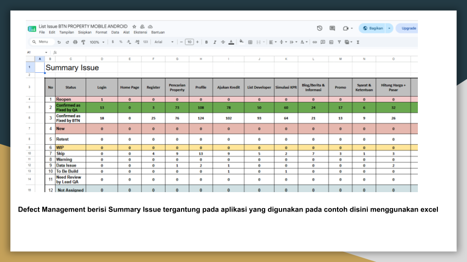

Quality Assurance Tester
Passionate QA Tester focused on delivering reliable software through manual testing, automation testing, and continuous quality improvement.
👋 Hello, I'm
Rahardian Era Muliawan
Building Quality Through Better Testing
About Me
Perkenalkan, saya Rahardian Era Muliawan. Saya memiliki pengalaman selama 3 tahun sebagai Software Quality Assurance Tester dengan fokus pada proses pengujian kualitas perangkat lunak.
Untuk latar belakang pendidikan, saya merupakan lulusan D3 Manajemen Informatika dari Universitas Teknologi Yogyakarta dan melanjutkan studi S1 Sistem Informasi di Universitas Amikom Yogyakarta.


Test Plan & Test Strategy
Requirement Analysis
- Review BRD & FRD
- Identify Scope
- Risk Assessment
Test Design
- Create Test Scenario
- Create Test Case
- Prepare Test Data
Test Execution
- Manual Testing
- API Testing
- Regression Testing
Defect Management
- Bug Reporting
- Retesting
- Bug Verification
Contoh Requirement Analysis



Execute Test Cases
- Execute approved test cases
- Verify expected results
- Validate application features
Validate Business Flow
- Verify end-to-end workflow
- Validate business rules
- Confirm acceptance criteria
API Testing
- Validate API request & response
- Verify authentication
- Check data integration
Test Evidence Data
- Capture screenshots
- Collect execution logs
- Document test results
Regression Testing
- Re-test affected modules
- Verify bug fixes
- Ensure system stability
QA Sign-off
- Review execution summary
- Prepare QA recommendation
- Support UAT handover

Test Plan List